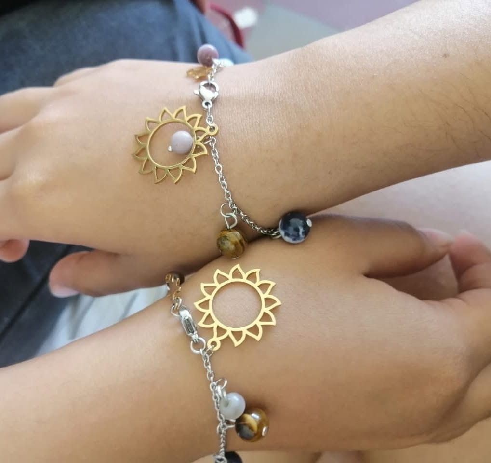
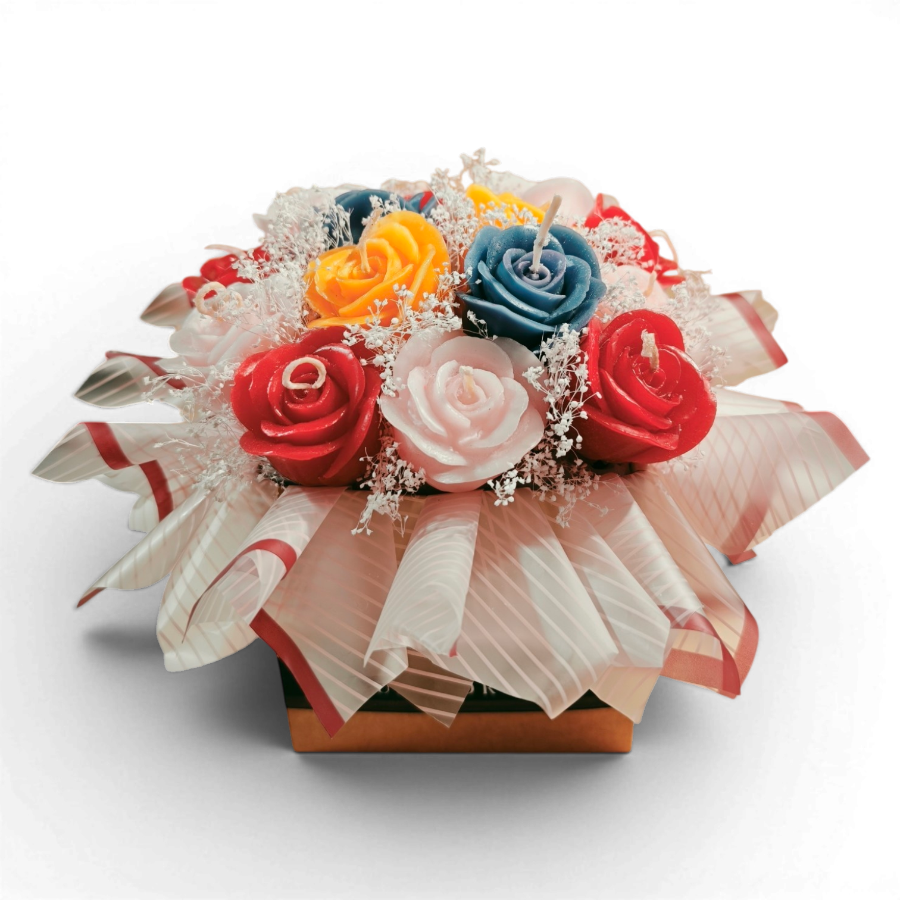

Sobre mí
Me llamo Katherine Sofía Cabezas Miranda. Nací el 16 de septiembre de 2006 en el Hospital Primero de Mayo del Seguro Social, en San Salvador, y vivo en el Barrio San Jacinto. Me considero una persona constante y emprendedora: desde muy pequeña aprendí que las oportunidades hay que buscarlas y que, cuando llegan, hay que aprovecharlas al máximo.
Mi camino académico ha estado marcado por las becas y por la costumbre de estudiar en paralelo. Durante varios años combiné el colegio con un programa sabatino y, más adelante, con un bachillerato técnico. Hoy estudio en la Escuela Superior de Economía y Negocios (ESEN) y, al mismo tiempo, sigo participando en el emprendimiento de mi familia.
Mi trayectoria
Cada etapa me fue preparando para la siguiente.
-
2006
Nacimiento
Nací en San Salvador, en el Hospital Primero de Mayo del Seguro Social.
-
Primera infancia
Guardería
Por el trabajo de mis papás, desde los dos años y medio hasta los cuatro años y medio estuve en una guardería, donde di mis primeros pasos fuera de casa.
-
Kínder a 9.º grado
Centro Escolar Católico Santa Catalina
A los cuatro años y medio empecé el kínder y ahí cursé toda mi educación básica, hasta graduarme de noveno grado con 15 años recién cumplidos.
-
Desde 7.º grado
Academia Sabatina (ASAB)
Por iniciativa propia busqué becas y apliqué a la Academia Sabatina, un programa financiado por el Ministerio de Educación y la Universidad Dr. José Matías Delgado. Fui aceptada en el área de Gestión Empresarial y empecé a cursarla a la par del octavo grado. El programa duraba cuatro años, pero la pandemia de COVID-19 lo extendió a cinco.
-
Desde los 15 años
Instituto Nacional General Manuel José Arce
Con 15 años y unos meses ingresé al Bachillerato Técnico Vocacional en Contaduría, que cursé durante tres años sin dejar la Academia Sabatina.
-
Hoy
Escuela Superior de Economía y Negocios
Gracias a la beca Oportunidades para Todos, hoy estudio en la ESEN, donde sigo formándome.
Emprender desde siempre
Participo activamente en el emprendimiento de mi familia, que tiene dos líneas de productos.

Bisutería
Accesorios elaborados a mano, con detalle y dedicación.

Velas artesanales
Velas hechas de forma artesanal, cuidando cada paso del proceso y su presentación.
De pequeña pensaba que vender era algo que todo el mundo hacía. Con el tiempo descubrí que no es así, y que esa costumbre es una de las cosas que más me definen.